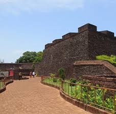
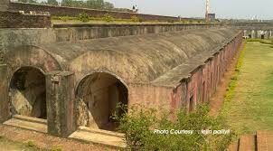
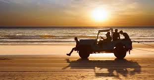
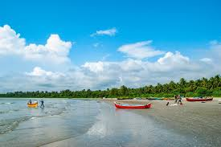
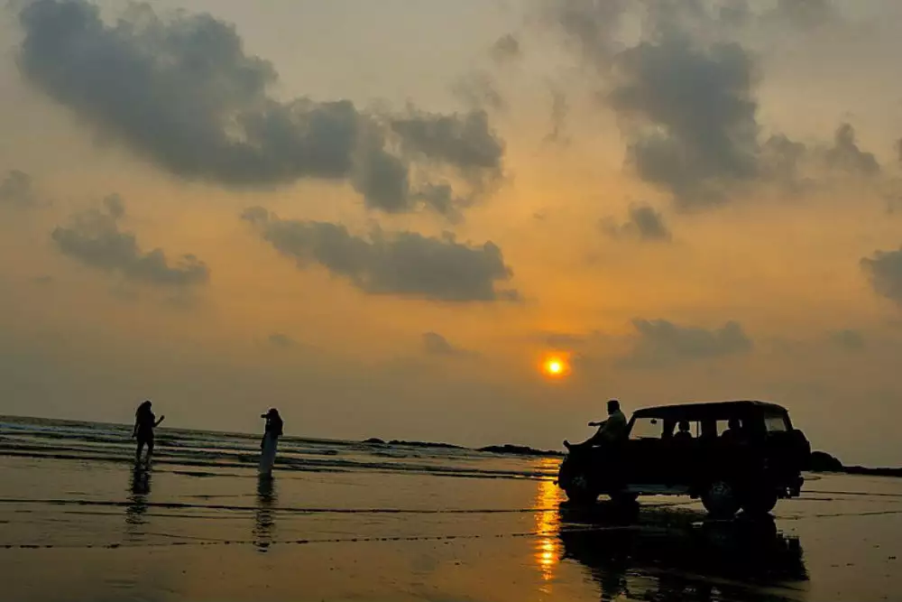
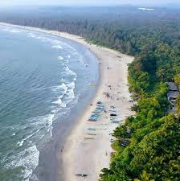

KANNUR

About Kannur
Kannur, also known as **"The Crown of Kerala"**, is famous for its **pristine beaches, Theyyam rituals, and historical forts**. The city is also known as the **"Land of Looms and Lores"** because of its vibrant handloom industry and rich folklore.
Kannur at a Glance
Famous For: Beaches, Forts, Theyyam, Handloom
District: Kannur
Best Season to Visit: October – March
Weather: Summer 25-35°C, Winter 20-30°C
How to Reach Kannur
By Air
Kannur International Airport (KIAL) is located about **25 km** from the city center.
By Train
Kannur Railway Station (CAN) is well-connected to major Indian cities.
By Road
Kannur is well connected via NH66, linking it to Kochi, Mangalore, and other key cities.
Top Attractions in Kannur
St. Angelo Fort

Built by the Portuguese in 1505, this **majestic seaside fort** offers stunning views of the Arabian Sea.
IMAGES GALLERY:





VIDEOS GALLERY:
Here is a vedio that might help you understand more;

Muzhappilangad Drive-in Beach

India’s **only drive-in beach**, where you can **drive along the shore** for nearly **4 km**.
IMAGES GALLERY:





VIDEOS GALLERY:
Here is a vedio that might help you understand more;
Paithalmala

A scenic **hill station** and a trekker's paradise, offering **breathtaking panoramic views**.
IMAGES GALLERY:


VIDEOS GALLERY:
Here is a vedio that might help you understand more;

Parassinikadavu Muthappan Temple

A unique temple where **Theyyam performances** are an integral part of worship.
IMAGES GALLERY:
VIDEOS GALLERY:
Here is a vedio that might help you understand more;
IMAGES:


YOUTUBE VIDEOS:
Check out this video:

Must-Try Restaurants in Kannur
- Sahib’s Grill
- Hotel Odhens (Famous for seafood)
- MVK Restaurant
- Sheen Bakery
Best Places for Shopping
- Kannur City Centre
- Fort Road Market
- Thavakkara Market